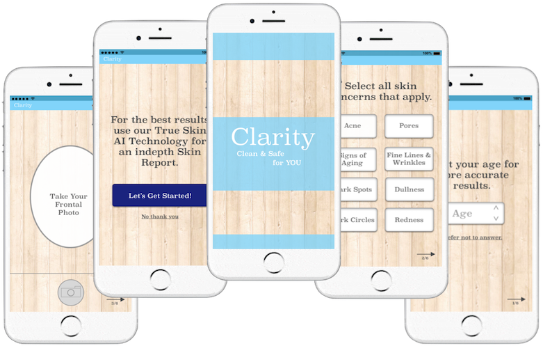
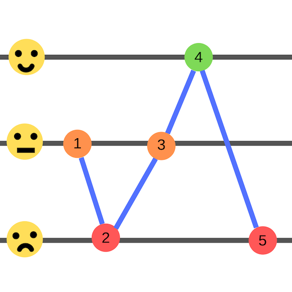

Clarity: an app to help you find clean and safe personal products for your health, skin type and skin concerns
Digital tools used: Sketch, Principle for Mac, and Photoshop
Introduction
Let’s take a walk down the makeup and skincare aisles. Notice a change from what is was like 5 years ago? There’s a lot more labels saying “clean,” “natural,” “green,” “non-toxic,” “paraben free,” “vegan,” etc.
Why?
This is the result of outrage ranging from hearing that Wen Cleansing Conditioner products have caused women’s hair to fall out to lead being found in lipsticks. [1] [2]
Did you know that the average woman uses 12 personal products everyday, which exposes her to about 168 ingredients, the majority of which you can’t even pronounce? [3]
The Problem
Cosmetic Regulation by the FDA has not been updated since 1938. The regulations are so loose that seeing words like “clean,” “natural,” and “green” doesn’t really mean anything. Cosmetic and skincare companies can define those terms in anyway they like. [4]
The safety of women and men are put at risk due to loose regulations as they can be exposed to dangerous toxins. The average person doesn’t want to spend time to look up each and every ingredient in her skincare and then have to decipher the science behind it all.
There must be a way for consumers to more easily find products that are actually clean, natural, and effective for their own personal skin care needs.
Existing Solutions
Sephora has recently launched its “Clean at Sephora” campaign, in which on their website they designate brands that do not contain certain hazardous ingredients with the “Clean at Sephora” label. These ingredients as listed by Sephora are
Clean at Sephora™ is formulated without: Sulfates SLS and SLES, parabens , formaldehydes, formaldehyde-releasing agents, phthalates, mineral oil, retinyl palmitate, oxybenzone, coal tar, hydroquinone, triclosan , triclocarban, PTFE/PFOA, styrene, polyacrylamide/acrylamide, acetaldehyde, acetonitrile, methylene chloride, animal fats, oils, and musks, benzalkonium chloride, toluene, resorcinol, acetone, butoxyethanol, ethylenediaminetetraacetic acid, methyl cellosolve, methylisothiazolinone/ methylchloroisothiazolinone, mercury and mercury compounds (thimerosal), bisphenol A(BPA). [5]
The apps Think Dirty and the EWG's Skin Deep both use online databases to judge the toxicity level of ingredients.
There is a gap in the market of personalization. Knowing whether or not an ingredient is toxic doesn’t solve everything. We are all unique human beings so irregardless of whether an ingredient is not toxic we may all react differently to it due to our skin type and skin concerns. For example, coconut oil isn’t considered toxic and can be great for hydrating dry skin types. Yet, for individuals with oily skin and acne concerns coconut oil is too heavy for an oil to be used on the face. Another problem is that existing options do not look at how ingredients interact with each other. They only look at ingredients individually. The problem with this is that the way the ingredients interact can affect how toxic a product is. For example, packaging can say it is “Formaldehyde free” but the ingredients in the product when put together create formaldehyde.
There needs to be an easier way for consumers to find products that best suit their needs and have ingredient lists that have been fully analyzed.
Target Audience
Women and men that want to buy safer and more effective personal products that best meet their skin types and concerns.
Storyboard
Experience Mapping
Experience mapping was created to understand the pain points in shopping for personal products such as skincare, makeup, and fragrances etc.
Experience Map Without the App
- Cordilia is at home watching beauty guru product reviews on Youtube and reading reviews online.
- She is seeing a lot of mixed reviews for products. This makes her worry about how her skin may react and she doesn’t know which reviews truly will apply to her.
- She finds a product that appears good and has natural ingredients. The package says it will suit her skin type and skin concerns.
- She goes to the store and buys the product.
- Cordilia’s skin gets irritated from the product. She now feels self conscious about her skin and feels like she wasted her money.
This experience map shows Cordilia’s experience in shopping for a product and her experience with the product without the app, Clarity. There are two pain points in this experience. First when she sees the mixed reviews for products because she doesn’t know what her experience with the product will be like for her. The second pain point is when her skin gets irritated from the product she bought. My goal was to target the first pain point because it would have an impact on the second pain point.
Experience Map With the App
- Cordilia is at home watching beauty guru product reviews on Youtube and reading reviews online.
- She is seeing a lot of mixed reviews for products. She isn’t worried about seeing these mixed reviews since she knows she can easily look up the ingredients and understand the ingredients.
- She looks the products up on Clarity to learn how her own skin may react to the ingredients. She finds a product that suits her skin type, skin concerns, and is low in toxicity.
- She goes to the store and buys the product.
- Her skin looks brighter, clearer and healthier. She feels happy.
With the app Cordilia’s mood is lifted and she is happier. She is able to go through the process of finding a product more easily and she can buy her product with having a better idea how her skin will react.
Persona
Cordilia Biddle
Age: 25
Occupation: Designer
“Shopping for skincare is stressful due to my sensitive skin. I’m always scared when purchasing a product if it is going to break me out. I want to believe that products that are marked “clean” are indeed good for my skin. Yet, even when I buy products that are ‘clean’ my skin somehow always manages to act up.”
“It’s not vanity. I just want products that can help me to feel more comfortable and confident.”
Personality: extroverted, agreeable, and funny
Needs
- To better understand the ingredients in her products
- Wants to quickly look over ingredient concerns and not spend hours deciphering complex science jargon
- To better gauge how a product will react to her skin than having to rely on only general product information
- Easy to use app that she can whip out quickly at the store
Wants
- Healthier and clearer skin.
Concerns
- Wary of fake reviews.
- Worried that certain brands will be pushed because they are sponsors.
Needs to Feel
- Not Overwhelmed by data and information
- Calm and reassured
- Empowered as a consumer
While empathizing with the user I came up with Clarity.
Clarity is an app that personalizes the process of finding clean products. Not only will it use cosmetic databases to find the toxicity levels of a product, overall, based on the ingredients it contains but the individual ingredients will also be taken into consideration as to how the ingredients interact with certain skin types, skin concerns, and other ingredients. Clarity will not rate any product where full ingredient lists cannot be found since if a company is not willing to put out the full list it probably isn’t clean.
User Flows
While creating the user flows I had to consider, Cordilia, the persona I created.
Should onboarding be forced?
When I first drew the user flow I went in with the assumption that users would want to sign up for the account and go through the entire onboarding process . However, upon further reflection I questioned if users would get frustrated upon opening the app for the first time that they would have to go through multiple steps to create an account and profile. Since what if a user was in the store at that moment and just wanted quickly to look up a product, despite not getting personal feedback.
Thus, I asked users how they would feel having to make an account. Here are some responses I got that stuck out.
“Me I would not want to be forced to go through all that.”
"It would be nice if you could almost like sample it."
"I wouldn’t want to give access to my Facebook/Google account for an app I haven’t even used yet. I need to build trust with it first."
Forcing users to create an account even if it will give them more personalized product details creates for a bad user experience. Login walls act as a disincentive for users because there are interaction costs to creating an account. Costs that users cannot even justify bearing for an app that they have not interacted with.
Result
In the user flow users are given the option to skip creating the account and profile. Plus, users are not forced to give information that they don’t want to. Users can choose not to answer certain questions.
Designing the Layout and Necessary Content
I started the process of deciding what content was necessary to include and how to layout content based off of the persona and user flow I created.
Design Struggles
Home Screen Content
I struggled with finding the balance of just the right amount of content. I knew for sure the search bar for products and the barcode scanner had to be on the home screen. This is because when users are out at the store or online shopping they want to easily access the app to see if the product they are shopping for will work for them.
The layout I decided on was having the search bar, barcode scanner, and vertically scrollable list of the latest trends in skincare and makeup. I orginally thought that “My Products” should be on the home page, yet I thought about how the average woman uses 12 products daily. So, that doesn’t include all of the other products on her bathroom shelf and in her makeup box. Hence, I decided that because there are going to be a lot of products that deserves its own page.
Displaying Toxicity/Hazard
I wanted to create a way of doing this that was easy for users to look at quickly on their phones and make a decision. I thought about using circles initially yet decided against it because users are going to have to look at it longer to understand it than if they were to look at a number. Also, I thought about making a linear graph, yet decided against it because it would take up a lot of room on a phone. I felt that with a scoring system of numbers it would be the quickest and easiest for consumers to look at.
Risk Meter
0 none
1-2 low
3-6 moderate
7-10 high
Paper Prototype: Created to investigate the usability of the app and user satisfaction.
From paper prototyping I was able to gain insights on how to further improve the app.
Selecting Multiple Skin Concerns
Users were unsure whether or not they were able to select multiple skin concerns. I realized from this that the wording I had used as the header wasn’t clear enough. Originally the wording was “Select Skin Concerns” and I changed it to “Select all skin concerns that apply” to make even more clearer that multiple could be selected.
Number of Steps in the Onboarding Profile Creation Process
Users said that knowing how long the profile creation process was while making the profile would be helpful. For a user to know how many steps are left is critical in ensuring a great user experience. If a user is completely blind to the length of the process a user may think the process will just keep going on for a long time, resulting in the user just quiting and deleting the app. When users know how many steps are left they feel like they are in more control because they are able to visually see progress in the completion of the profile. Upon this discovery I included below the next button that takes you to the next page a fraction telling you the number of steps you have completed over the number of steps you haven’t completed.
Wireframes
Based off of the feedback I had gotten from users during the user testing of the paper prototype I applied those changes to the wireframes.
While creating the wireframes I looked to see how I could make each page of the app consistent. One problem I found was with making the pages in the onboaring process when the user takes photos of herself consistent with the other pages. Yet, I found that when the “next button” was on the page where the user takes her photos it looked very clunky and awkward, almost as if it was just thrown on to the page. The solution I created was to make the “next button” become an arrow pointing right and that below the arrow would be the number of steps remaining.

From having another person look at my wireframes I learned that in the onboarding process choices like “No thank you” and “Prefer not to answer” didn’t fully look clickable. To make it look more clickable and like a choice users can really choose I decided to make it underlined.
High Fidelty Prototypes
Through the research and feedback I received I created high fidelty prototypes by using Sketch and Principle For Mac. The products featured are ones I made up and created by using Photoshop.
The Clarity Onboarding Process

Scanning the Barcode of Items

The Rest of the App